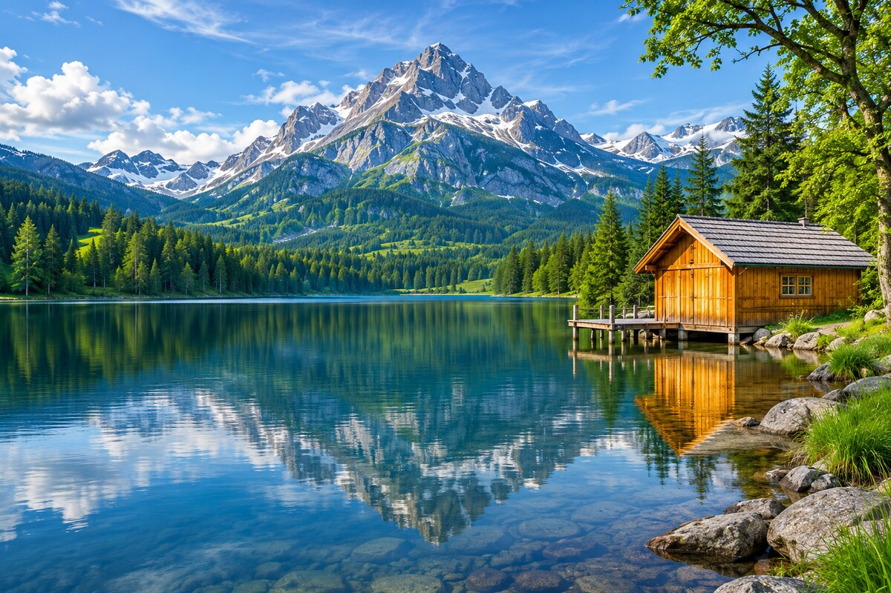
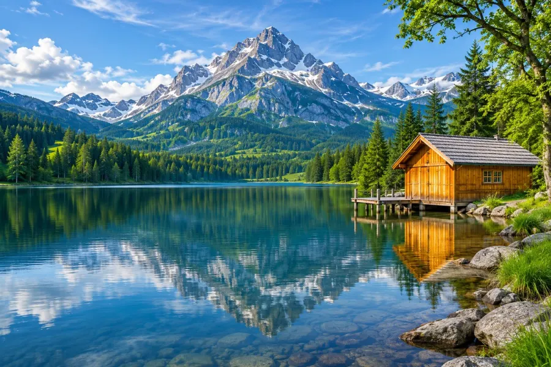
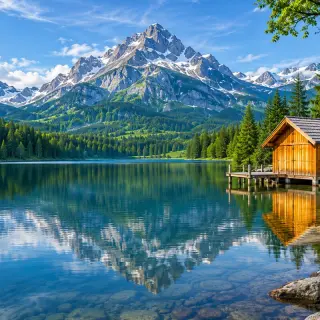

One upload, multiple image formats
Resize, crop and convert an image in one upload. MediaForge returns a PHP array you can store in your existing Laravel model.
See the resultsuse Webcimes\LaravelMediaforge\ImageFormat;
use Webcimes\LaravelMediaforge\Facades\MediaForge;
MediaForge::upload($file, 'public', 'demo', [
ImageFormat::make('webp')
->scaleDown(900)->quality(78)->extension('webp'),
ImageFormat::make('thumbnail')
->cover(320, 320)->quality(75)->extension('webp'),
]);Image results
The two WebP files below were generated by MediaForge using the options above.





